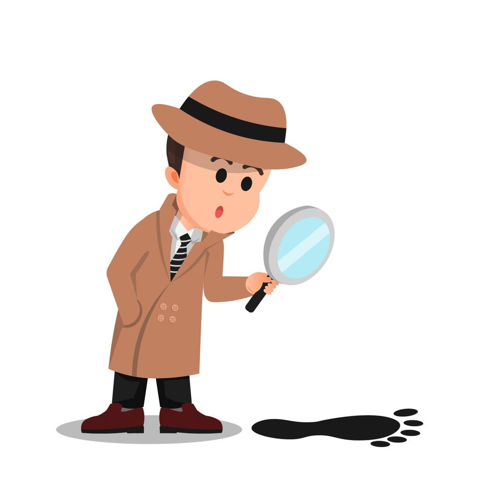

Cos'è la narrazione? (Causa, Tempo e Spazio)
Per Bordwell e Thompson, la narrazione è un sistema formale che organizza gli eventi in modo coerente. Non si tratta solo di raccontare una storia, ma di creare una catena di eventi legati tra loro da un rapporto di causa ed effetto, che si sviluppano nel tempo e nello spazio.
Il cinema ci spinge a costruire mentalmente la storia completa mentre guardiamo l’intreccio. Ogni azione di un personaggio (causa) genera conseguenze (effetto) che influenzano gli eventi successivi. Senza questi legami causali, avremmo solo una serie di immagini slegate. La narrazione funziona perché attiva le nostre aspettative: vogliamo sapere cosa succederà dopo e perché i personaggi si comportano in un certo modo.
